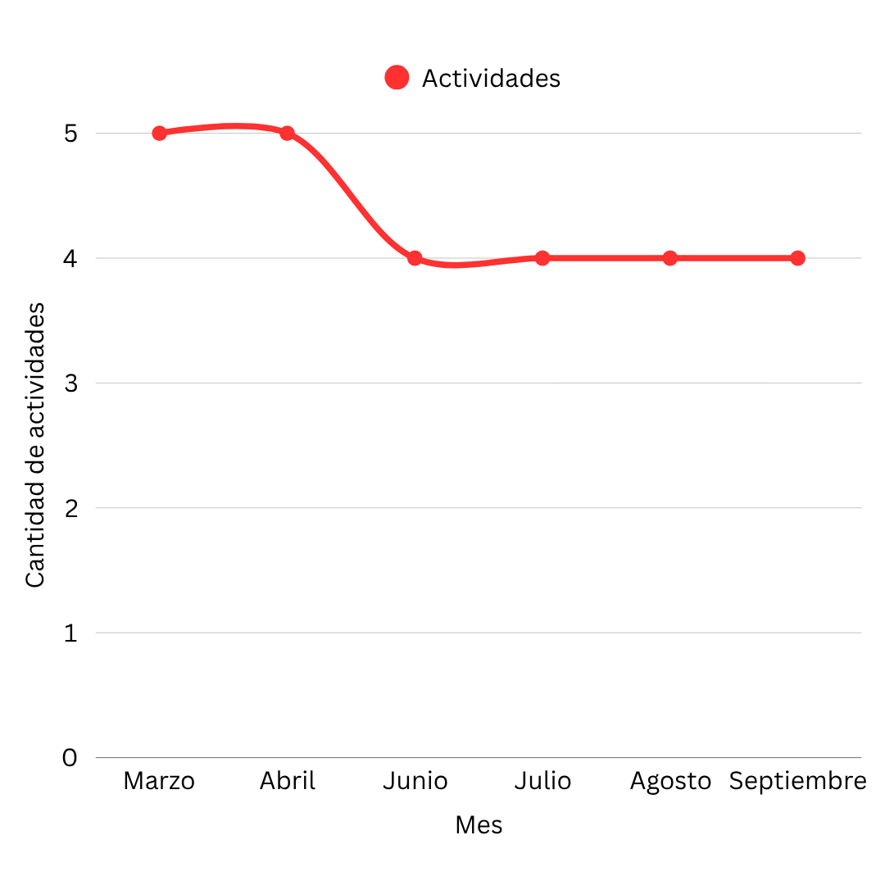
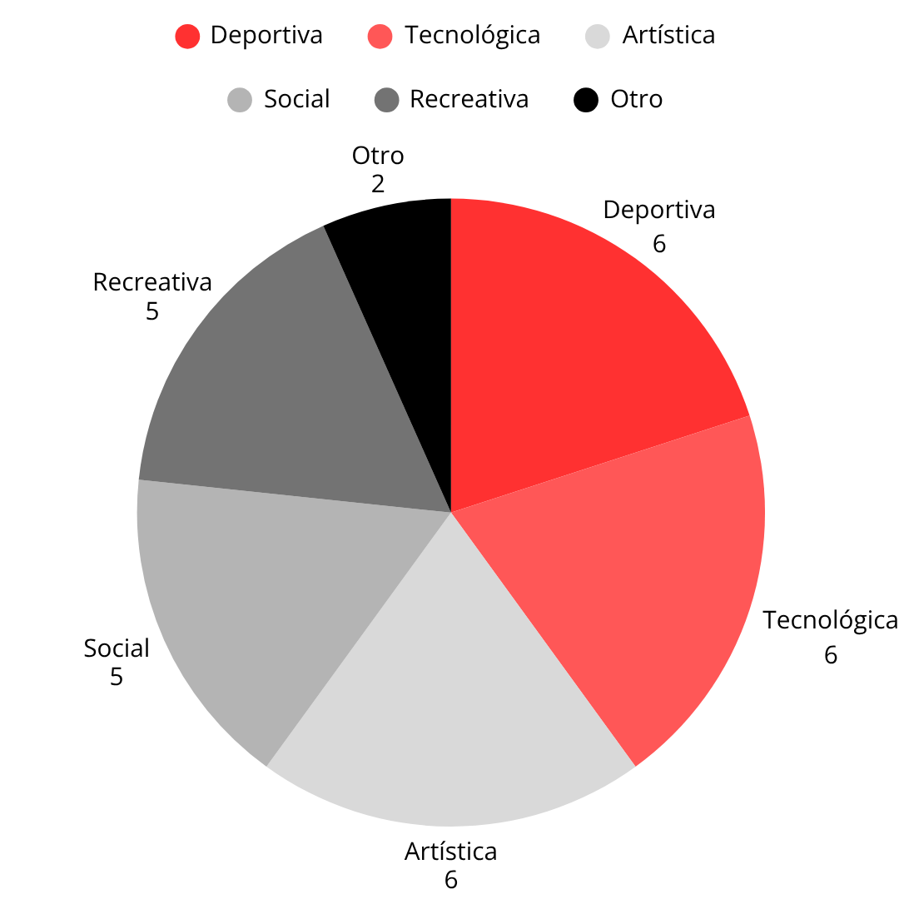
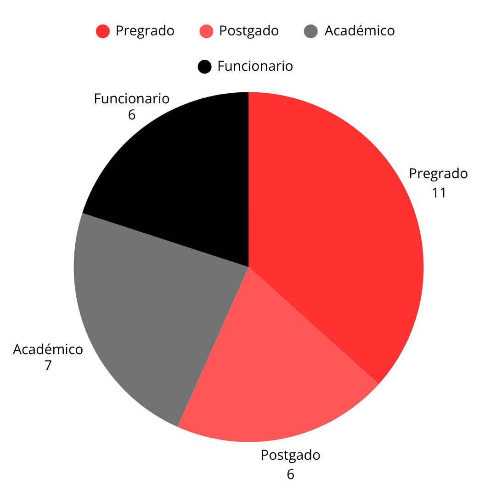

| Métrica | Valor |
|---|---|
| Total de actividades | 30 |
| Total de horas | 115 h |
| Promedio de horas por actividad | 3.83 h |
| Nombre | Actividad | Horas | Enlace |
|---|---|---|---|
| Diego Sebastián Martínez | Hackathon de Inteligencia Artificial | 12 | https://dcc.uchile.cl/hackathon-ia |
| Pedro Antonio Soto | Jornada de Integración Laboral | 8 | https://www.uchile.cl/bienestar/integracion |
| Daniela Constanza Díaz | Voluntariado Comunitario | 6 | https://www.uchile.cl/extension/voluntariado |
| Patricia Alejandra Valenzuela | Taller de Escultura en Piedra | 6 | https://artes.uchile.cl/escultura-piedra |
| Javiera Ignacia Cortés | Competencia de E-Sports: Valorant | 6 | https://deportes.uchile.cl/esports-valorant |


